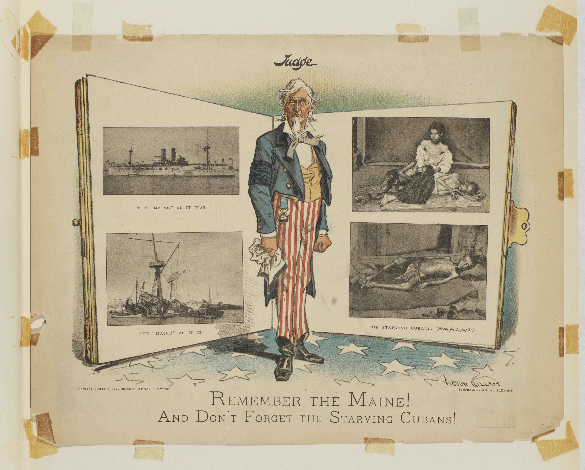
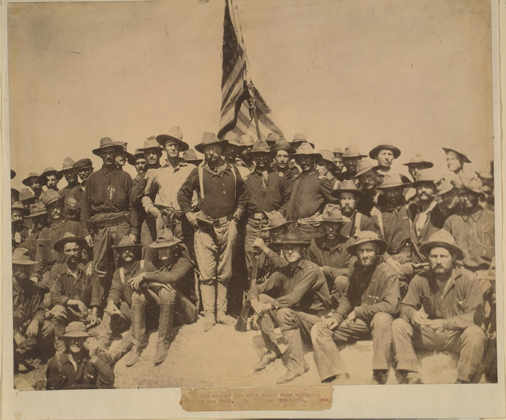

Directions: Work through the six stations in order: a yellow-press cartoon, a careful magazine report, the official inquiry into the Maine, the promise Congress attached to the war, a photograph of the fighting, and the treaty that ended it. At each station, answer the questions in the space provided. In Part 2 you will sort six claims about the war into liberation, conquest, or both, and then deliver a verdict on the lesson question. Quoted matter is verbatim from the editions named on each source line; cuts are marked with ellipses.
Source: Victor Gillam, "Remember the Maine! And Don't Forget the Starving Cubans!," Judge magazine, May 7, 1898, as carried in the TPSP source bank.

The battleship USS Maine exploded in Havana harbor on February 15, 1898, killing 266 officers and men. No investigation had established who, if anyone, caused the explosion. Gillam drew Uncle Sam in mourning, wearing a black armband, standing before an open album. Its left page shows the Maine as it was and the wreck as it is; its right page shows starving Cubans, drawn from photographs. The cartoon appeared while rival New York newspapers competed to sell papers with dramatic war coverage, the style called yellow journalism.
The cartoon orders readers to remember two things. Name both, and explain what action each one is meant to produce.
The cartoon never names who destroyed the Maine. What connection between the ship and the starving Cubans does it invite the viewer to draw anyway, and what evidence does it not provide?
Source: Harper's Weekly, "Remember the Maine," February 26, 1898, as carried in the TPSP source bank (Gilder Lehrman Institute text). The passage begins mid-article; the opening cut is marked in the bank text.
"[...] the fate of the Maine will continue an unsolved mystery for historians to wrangle over. Meanwhile all that we shall positively know is that the explosion occurred forward, and hence that the seamen rather than the officers were the sufferers; that not more than 26 of the men remained uninjured; 57 being wounded and 246 killed, and that two of the 24 officers are certainly lost."
Harper's Weekly was a respected illustrated magazine, and it published this account eleven days after the explosion, while the yellow press was already blaming Spain. Note its figures: it counted 246 killed. The final toll, counting men who later died of their wounds, was 266.
What does Harper's Weekly admit that the yellow press would not, and which phrase in the passage carries the admission?
Why do the casualty figures here (246 killed) differ from the figure of 266 used in this lesson, and what does the difference show about reporting done in the first days after an event?
Source: Conclusions of the Naval Court of Inquiry, as transmitted by President William McKinley in his Special Message to Congress, March 28, 1898 (American Presidency Project; also in Foreign Relations of the United States, 1898). The two conclusions are quoted from the court's list; the marks [...] show where list matter before each conclusion has been cut.
"[...] the ship was destroyed by the explosion of a submarine mine, which caused the partial explosion of two or more of her forward magazines"
"[...] no evidence has been obtainable fixing the responsibility for the destruction of the Maine upon any person or persons."
The court also found the loss was not due to any fault of her officers or crew. Spain denied responsibility. Congress declared war on April 25, 1898.
State, in one sentence each, what the inquiry concluded about the cause of the explosion and what it concluded about responsibility.
A senator argues in April 1898: The inquiry proves Spain blew up the Maine, so war is justified. Use the second quotation to answer him precisely. What does the document actually give him, and what does it refuse to give him?
Source: The Teller Amendment, Fourth Resolution of the joint resolution of Congress for the recognition of the independence of the people of Cuba, approved April 20, 1898.
"That the United States hereby disclaims any disposition or intention to exercise sovereignty, jurisdiction, or control over said Island except for the pacification thereof, and asserts its determination, when that is accomplished, to leave the government and control of the Island to its people."
The first resolution in the same document declared that the people of Cuba "are, and of right ought to be, free and independent." The amendment was named for Senator Henry M. Teller of Colorado, who offered it so that the war could not be read as a war to annex Cuba.
What exactly does the United States give up in this text, and what one exception does it keep?
Why would a senator who supported the war insist on adding this promise to it? Name two audiences he might have been answering.
Source: William Dinwiddie, photograph, "Colonel Roosevelt and his Rough Riders at the top of the hill which they captured, Battle of San Juan," 1898, Library of Congress (LCCN 96521936), with a labeled summary of the campaigns of 1898 based on the lesson reading.

The war's first battle was fought in the Pacific: on May 1, 1898, Commodore George Dewey destroyed the Spanish fleet at Manila Bay in the Philippines. In Cuba, troops landed near Santiago in June and on July 1 attacked El Caney and the San Juan Heights. The Rough Riders, the First United States Volunteer Cavalry led by Theodore Roosevelt, charged up Kettle Hill alongside regular cavalry regiments. On July 3 the Spanish fleet at Santiago was destroyed trying to escape, and the city surrendered on July 17. Fewer than 400 Americans died in battle; about 2,400 died in all, most from disease.
The photograph is posed after the battle, not taken during it. How does that change what the photograph can be used as evidence for, and what can it still prove?
Using the summary, explain why the location of the war's first battle creates a problem for the claim that the war was fought only to free Cuba.
Source: Treaty of Paris, December 10, 1898, Articles I, II, and III (Avalon Project, Yale Law School), and the Platt Amendment, Articles III and VII, as enacted March 2, 1901 (National Archives transcript). In Article III the long boundary description of the Philippine Islands has been cut and the cut is marked.
Article I. "Spain relinquishes all claim of sovereignty over and title to Cuba."
Article II. "Spain cedes to the United States the island of Porto Rico and other islands now under Spanish sovereignty in the West Indies, and the island of Guam in the Marianas or Ladrones."
Article III. "Spain cedes to the United States the archipelago known as the Philippine Islands, and comprehending the islands lying within the following line: [...] The United States will pay to Spain the sum of twenty million dollars ($20,000,000) within three months after the exchange of the ratifications of the present treaty."
Platt Amendment, Article III (1901). "That the government of Cuba consents that the United States may exercise the right to intervene for the preservation of Cuban independence, the maintenance of a government adequate for the protection of life, property, and individual liberty [...]"
Platt Amendment, Article VII (1901). "That to enable the United States to maintain the independence of Cuba, and to protect the people thereof, as well as for its own defense, the government of Cuba will sell or lease to the United States lands necessary for coaling or naval stations at certain specified points to be agreed upon with the President of the United States."
Cuba wrote the Platt Amendment into its constitution as the price of ending the American occupation, and became independent in 1902. The United States leased Guantanamo Bay in 1903.
Sort the four territories in this station by the verb the documents use for them: relinquished, or ceded. Then state what the United States paid, and for which territory.
Read the Teller Amendment promise at Station 4 against Platt Articles III and VII. In what sense was the promise kept, and in what sense was it narrowed?
For each claim, write L (liberation), C (conquest), or B (both), and name the station whose document best supports your sort.
Claim 1: The United States went to war after promising, in law, that it would not take Cuba. Sort: ______ Station: ______
Claim 2: The United States ended the war holding Puerto Rico, Guam, and the Philippines as its own territory. Sort: ______ Station: ______
Claim 3: Cuba became an independent republic whose constitution gave a foreign power the right to intervene in its affairs. Sort: ______ Station: ______
Claim 4: Spain's rule in Cuba, including the reconcentration deaths, was ended by American arms in less than four months. Sort: ______ Station: ______
Claim 5: The Philippines changed hands for twenty million dollars in a treaty their own leaders never signed. Sort: ______ Station: ______
Claim 6: The public demand for war was built in part on an explosion whose responsibility the official inquiry could not fix on anyone. Sort: ______ Station: ______
The verdict. Was the war with Spain fought to free Cuba, to take an empire, or both? Deliver your verdict in a paragraph. State your answer in the first sentence, support it with evidence from at least two stations, and answer the strongest claim on the other side of your sort.
Name the two things readers are ordered to remember, and the action each is meant to produce. First, the Maine and its dead sailors, meant to produce anger and support for war. Second, the starving Cubans, meant to produce sympathy for Cuba's rebellion and support for intervention. The cartoon fuses the two into one war cry: avenge the sailors by freeing the Cubans.
What connection does the cartoon invite, and what evidence does it not provide? By placing the wreck and the starving Cubans on facing pages of one album, under one mourning figure and one slogan, the cartoon invites the viewer to treat the two as a single Spanish crime and a single case for war. It provides no evidence about who caused the explosion; the pairing does the arguing. By May 1898 no evidence had fixed responsibility on Spain or anyone else.
What does Harper's Weekly admit, and which phrase carries it? It admits that the cause of the explosion was unknown. The phrase is "the fate of the Maine will continue an unsolved mystery for historians to wrangle over." It then limits itself to what "we shall positively know," mostly the position of the blast and the casualty count.
Why do the figures differ, and what does the difference show? Harper's wrote eleven days after the explosion and counted 246 killed at that point; the final toll of 266 includes men who died later of their wounds. Early reporting after a disaster is provisional: first-day figures are the best count then available, not the settled record.
State the two conclusions. Cause: the ship was destroyed by the explosion of a submarine mine, which caused the partial explosion of two or more of her forward magazines. Responsibility: no evidence had been obtainable fixing the responsibility for the destruction of the Maine on any person or persons.
Answer the senator precisely. The document gives him a mine: an external explosion, not an accident inside the ship, on the court's finding. It refuses to give him Spain. The court expressly obtained no evidence fixing responsibility on any person, which includes the Spanish government. A war argument built on Spanish guilt goes beyond the document he is citing. (Text: McKinley's Special Message to Congress, March 28, 1898, transmitting the court's conclusions; American Presidency Project and Foreign Relations of the United States, 1898.)
What does the United States give up, and what exception does it keep? It gives up any disposition or intention to exercise sovereignty, jurisdiction, or control over Cuba: in plain terms, it renounces annexation and permanent rule. The one exception is control "for the pacification thereof," temporary control while order is established, after which government and control are to be left to the Cuban people.
Why insist on the promise, and for which audiences? To hold the war coalition together and define the war's purpose before the fighting started. Audiences include, any two: Americans who opposed annexation; Cubans being asked to cooperate with an American army; European powers watching for an American land grab; and Spain, which claimed the war was one.
How does the posed character of the photograph change its evidentiary use? It cannot show what the charge looked like while it happened, because the men were arranged for the camera afterward, commonly dated about July 3, 1898. It still proves who held the hilltop when the fighting there ended, which regiments were present together, including the 3rd and 10th Cavalry beside the Rough Riders, and how the victors wished to be remembered. (William Dinwiddie, 1898, Library of Congress, LCCN 96521936.)
Why does the first battle's location trouble a liberation-only claim? The first battle was at Manila Bay in the Philippines, Spain's Pacific colony, thousands of miles from Cuba and unconnected to Cuban independence. A war fought only to free Cuba did not need to destroy a fleet in Asia or occupy Manila. The Philippine campaign shows the war's aims, or at least its uses, extending to Spain's other colonies from the first week.
Sort the territories by verb, and state the payment. Relinquished: Cuba (Article I; Spain gave up its claim, and the island was not transferred to the United States). Ceded: Puerto Rico and Guam (Article II) and the Philippine Islands (Article III). Payment: the United States paid Spain twenty million dollars, for the Philippines, within three months after the exchange of ratifications.
How was the Teller promise kept, and how narrowed? Kept: the United States did not annex Cuba, which became an independent republic in 1902, as promised. Narrowed: independence came with the Platt Amendment in Cuba's constitution, under which the United States kept a right to intervene and a right to Cuban land for coaling and naval stations, exercised at Guantanamo Bay in 1903. Cuba governed itself under standing American supervision, a protectorate in practice.
Claim 1: B or L, Station 4. The promise itself is liberation evidence (L). Full credit for B where the student notes the pacification exception inside the same sentence. Do not credit C.
Claim 2: C, Station 6. The cessions in Articles II and III are the documentary core of the conquest sort.
Claim 3: B, Station 6. Independence and the intervention right stand in the same settlement; either half alone is an incomplete reading.
Claim 4: L, Station 5. Ending Spanish rule, including the regime responsible for reconcentration, is liberation evidence, whatever else the war also did.
Claim 5: C, Station 6. A cession for a cash payment, negotiated between Spain and the United States with no Filipino signature, is the clearest single conquest document in the lab.
Claim 6: B, Stations 1 and 3. The unproven explosion supplied the emotional cause of a war whose declared object was liberation (Gillam, Station 1) and whose official record could not fix responsibility (inquiry, Station 3). Credit B; credit a defended L or C only where the student explains that the claim is about the war's origins rather than its aims.
Full credit should be awarded if the student:
Any of the three verdicts can earn full credit. Grade the handling of the documents and the answer to the counterclaim, not the verdict chosen.
Quotation note for teachers. All quotations in this lab are verbatim against the editions named on the source lines. Cuts are marked with ellipses or [...] at the point of the cut: the Harper's Weekly passage begins mid-article as carried in the TPSP bank; the inquiry conclusions are quoted from the court's list in McKinley's March 28, 1898 message; the boundary line in Treaty Article III is cut between the opening cession and the payment sentence; Platt Article III is cut after "individual liberty," before its concluding clause on the obligations imposed by the Treaty of Paris.